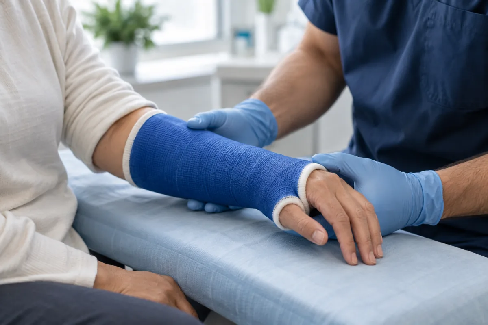

A bigger visit than you need.
For a non-life-threatening injury, an ER visit can mean a long wait and a facility fee. Emergencies should always go straight to the ER.
Same-day fracture care · Draper, Utah
On-site X-ray, an orthopedic specialist, and a clear plan. Get answers and the cast or splint you need in one visit.
Call the Draper clinic. Walk-ins welcome—no appointment needed.
“Got X-rays and a full plan with follow up notes in an hour.”
Ashlea Thomsen · Google review
The part nobody tells you
When you’re hurt, figuring out where to go shouldn’t be the hardest part.
For a non-life-threatening injury, an ER visit can mean a long wait and a facility fee. Emergencies should always go straight to the ER.
You may get an X-ray and a temporary splint, only to be referred to an orthopedist. Another visit, another wait, another explanation.
Some fractures feel like sprains. Waiting doesn’t tell you what’s wrong—or give an injury the protection it may need.
There’s a fourth door.Start with the orthopedic specialist.
See how your visit worksWhat that changes
Your X-ray and orthopedic evaluation happen in the same place. Understand what the image shows and what comes next.
Go straight to a team focused on bones, joints, and injuries. No separate appointment just to get started.
Casting and splinting are available on site. Your provider recommends the support that’s right for your injury.
Leave with a treatment plan and guidance for follow-up. If you need surgical care, the team helps coordinate it.
How a visit goes

Walk in during clinic hours. No appointment needed.
Get on-site imaging when your provider recommends it.
Review the findings with an orthopedic specialist.
Get the cast, splint, or next steps your injury needs.
Sprain or break?
Swelling, bruising, and pain can happen with either. An exam—and an X-ray when needed—helps take the guesswork out of it.
Walk in for an orthopedic evaluation. You don’t need to know what’s wrong first.
Being able to move or walk doesn’t rule out a fracture.
For an emergency, call 911 or go to the nearest emergency room.
General information, not a diagnosis or a complete list of emergency symptoms. If you’re unsure how serious an injury is, seek medical care.
Walk-in X-ray in Draper
On-site X-ray helps your orthopedic provider evaluate a possible fracture and plan treatment during your visit.
Hurt somewhere else? Call us to check the right place for your care.
Kids & teens
Kids’ fractures can be easy to mistake for a sprain. A child who’s still using an injured arm may still need an evaluation.
Growing bones can bend, compress, or crack partway rather than break completely.
Injuries around a growth plate need careful evaluation and appropriate follow-up.
Cost & insurance
Ask about your benefits and expected costs before treatment. We accept most major insurance plans, as well as self-pay.
Typical self-pay visit
$200–$400
Published clinic range. Ask for an estimate for your injury, including any imaging, casting, supplies, and follow-up.
Using insurance
Benefits and out-of-pocket costs vary by plan. Call to verify your specific network and specialist coverage.
More ways to pay
Use eligible funds toward copays, deductibles, and qualifying self-pay services. Bring your insurance card and photo ID.
Don’t see your plan? Call (385) 386-7026 to confirm coverage and request a visit estimate.
From people who walked in
X-rays & a plan
“Super fast and very thorough. Got X-rays and a full plan with follow up notes in an hour. They took my insurance so it wasn’t expensive either.”
A child’s fracture
“All around great experience. Grateful for the staff and assisting my 4 year olds fracture. They were very accommodating as we were visiting family in UT.”
A Saturday walk-in
“I thought I was out of luck trying to find an ortho doc on a Saturday, but I was able to walk in get seen right away.”
Google rating and review count as of September 13, 2026.
Meet the people behind your care
Meet members of the IOC team who care for bone, joint, and sports injuries.
Orthopedic surgeon
Board-certified · Fellowship-trained in sports medicine
Orthopedic physician
Board-certified · Fracture care and sports medicine
Physician assistant
Fractures, acute injuries, and sports-related conditions
Provider availability varies by day. Call the clinic with questions about your visit.
Before you come in
Still have a question?
Our team can help you figure out your next step.
Walk-in fracture care · Open 7 days
On-site X-ray, an orthopedic evaluation, and your next step forward. Right here in Draper.
4.9/5“He did a thorough exam and addressed all questions with a clear plan to move forward.”
Karlee Greer · Google review
Serving Draper, Sandy, South Jordan, Riverton, Herriman, Bluffdale, Lehi, and the surrounding Wasatch Front.